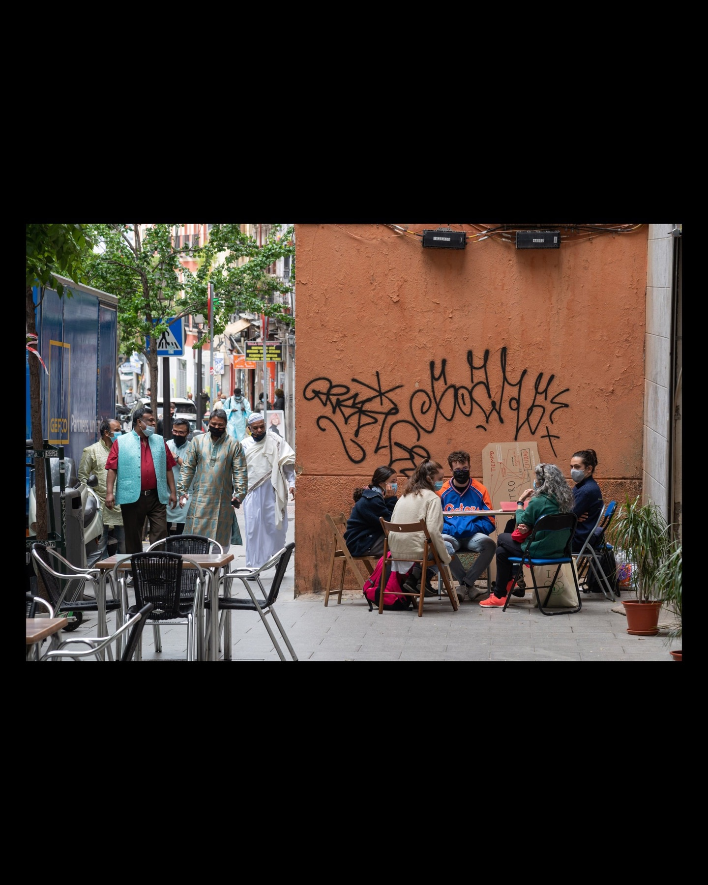
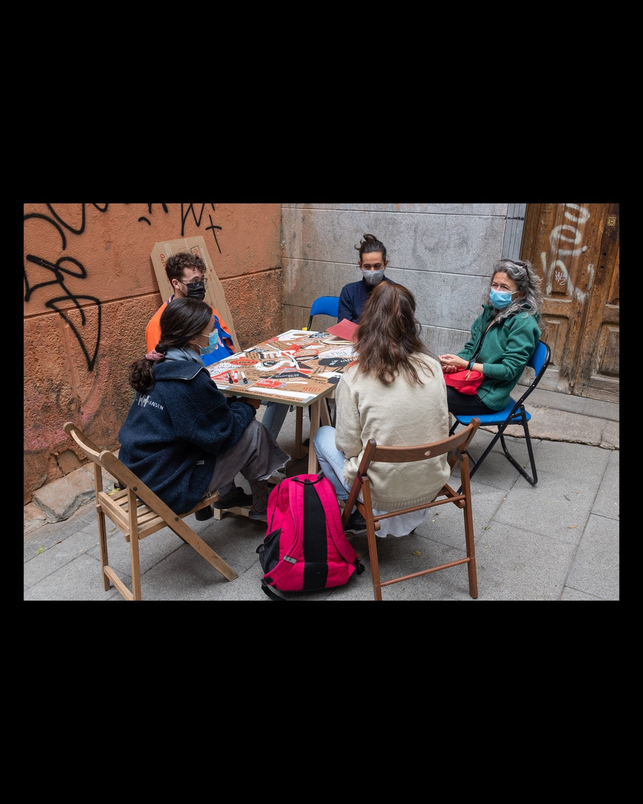
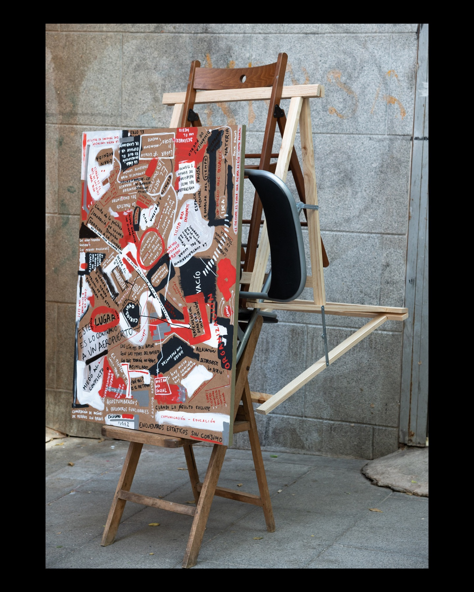

Obra2021
Una mesa y cuatro sillas
10 al 14 de mayo de 2021

A la espera de cuatro personas y una idea.
En el marco del festival CALLE Lavapiés nos apropiamos de un pedazo de calle. Durante una semana de mayo, situamos una mesa y cuatro sillas en la Calle Lavapiés.
Propusimos un espacio de encuentro y diálogo en una mesa alegal, inclasificable; no existe esta casilla en la administración. Quisimos partir de dos temas concretos: arte y ciudad, además de los que allí surgieran. Dejamos que el encuentro espontáneo desvelara nuestras necesidades comunes. Reivindicamos el derecho colectivo a la ciudad y a cuestionarla desde abajo.
La mesa, además de mesa, fue el cuaderno de notas; en ella quedaron dibujados fragmentos de las conversaciones. En el transcurso de los días conversamos con cincuenta y cuatro personas, unas vinieron a propósito, otras nos encontraron y se detuvieron. El diálogo se continuó a modo de una larguísima conversación entre gente que no estuvo allí a la vez. La mesa, las sillas, nosotros y la calle fuimos el hilo conductor.
Al cabo de cinco días transformamos la mesa y las sillas en una escultura en equilibrio que fue expuesta durante el festival.
- Dimensiones
- 170 x 80 x 120 cm
- Agradecimientos
- Madrid Street Art Project, CALLE Lavapiés

